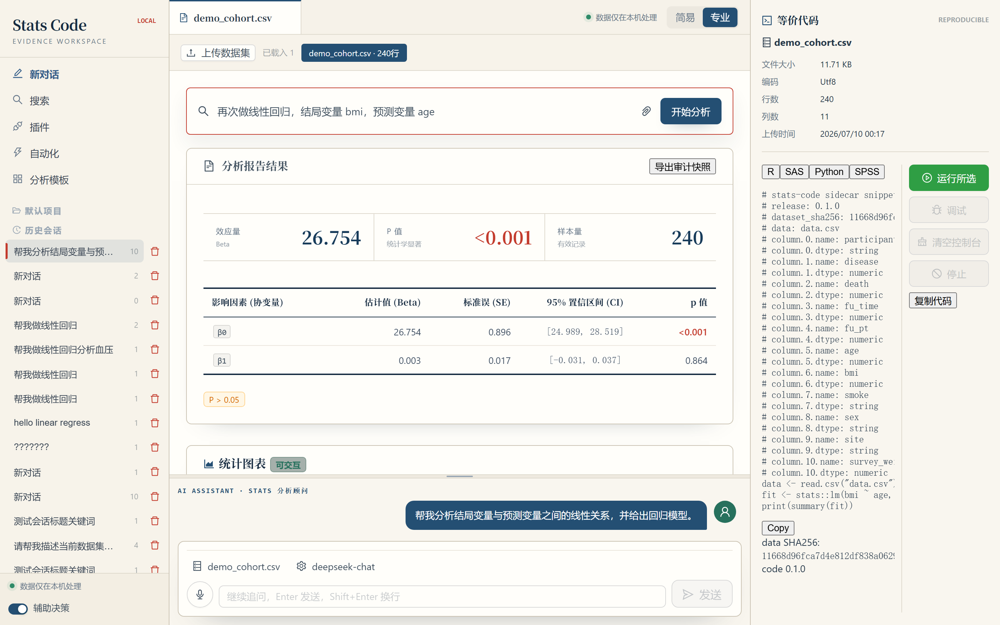

数据不出本机
服务默认绑定 127.0.0.1，会话与配置落在本机用户目录。适合临床与研究数据的隐私边界。
Stats Code 是跑在你自己电脑上的 AI 统计分析工作台： 一键启动本地服务，上传临床/研究数据，用对话或专业面板完成分析， 并自动附上 R / SAS / Python / SPSS 等价代码与审计快照。

专业模式 · 报告中心 · 等价代码 · demo_cohort.csv
不是把数据丢给公有云黑箱，也不是强迫你先写一堆脚本。 Stats Code 把「对话式意图」和「可审计的统计算法」接在同一条链路上。
服务默认绑定 127.0.0.1，会话与配置落在本机用户目录。适合临床与研究数据的隐私边界。
简易模式像科研助理；专业模式提供数据集、报告、运行控制与代码侧栏，适合真正产出结果的人。
进程内统计算法，不偷偷 spawn 外部统计软件；配合数值平价测试与等价代码，方便复核与交接。
一套后端契约，两种使用姿势——从「先聊清楚问题」到「把报告做完」。
上传 CSV/TSV，用自然语言描述分析意图。系统编排技能（基线表、回归、生存等），逐步澄清参数并给出结果与解释。
左侧会话与助理，中间报告与图表，右侧数据概览与等价代码。报告优先的版式，贴近真实统计分析交付物。
面向临床与观察性研究常见产出，算法以进程内纯函数方式运行。
“能跑出 p 值不够，还要能说清：怎么算的、对不对得上、能不能复现。”
需要快速出分析、又必须对结果负责的人——临床研究者、统计师、方法学同学， 以及要把「AI 助手」真正接到统计工作流里的团队。
| 形态 | 本机 localhost 应用（类似 Jupyter Lab / Streamlit 本地态） |
|---|---|
| 分发 | 单文件 stats-code.exe（Node SEA，约 90MB） |
| 依赖 | 用户机无需安装 Node / R / Python / SAS |
| LLM | 自带 API Key（如 DeepSeek）；Key 存本机用户目录 |
清晰三层：前端只对话与展示，server 管会话与契约，engine 专心算。
React 19 · Vite · Ant Design
双模式 UI / SSE 对话 / 上传
HTTP 契约 · 会话编排 · LLM 接线
13 条路由 · zod 单一事实来源
统计算法 · 数学核 · Sidecar
Snapshot / Parity / Spawn Policy
依赖方向强制为 api → server → engine。组合入口在 packages/api，负责 launcher 与 SEA 二进制。
两种路径：最终用户用 exe；开发者用仓库 dev launcher。
运行 install.ps1 安装 exe，或 clone 本仓库进入开发模式。
用户：终端输入 stats-code。
开发：双击 启动Stats前端.bat。
首次打开填入 Provider 与 API Key，点「测试并保存」后即可聊天。
上传 CSV，或一键加载 demo_cohort.csv，然后对话或专业面板跑分析。
前端 Vite：http://127.0.0.1:5173/
后端 API：http://127.0.0.1:8080/
Vite 将 /api/* 代理到后端。
单进程同时伺服 API 与内嵌前端，通常为
http://127.0.0.1:8080/（端口占用时自动后移）。
关闭窗口或 Ctrl+C 即停止全部。
Stats Code 不是「让模型随便编一个 p 值」，而是：意图理解 + 本地算法 + 等价代码 + 平价与快照。适合作为你研究项目里那块靠谱的分析桌面。